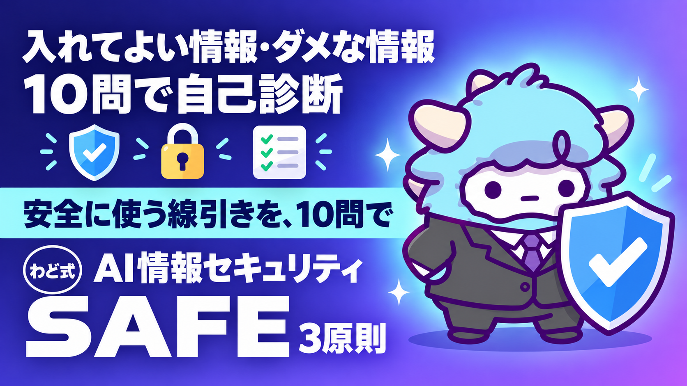

AI情報セキュリティ 3原則＋チェックリスト
入れてよい情報・ダメな情報の線引きを、10問で自己診断
このページが特典の本体です。下へスクロールして使ってくださいAI情報セキュリティ 3原則＋チェックリスト
AIに何を入れてよくて、何を入れてはいけないか。その線引きを自分の言葉で説明できるようになります。10問の自己診断で、今の自分の使い方がどこにリスクを抱えているかも分かります。
はじめに
わどです。AIを副業や仕事で使い始めると、必ずぶつかる壁があります。「これ、AIに貼っていいのかな」という迷いです。
クライアントからもらった資料。自分の売上や取引の数字。誰かの名前が入ったメッセージ。便利だからとつい全部貼ってしまいたくなりますが、それをやると情報漏洩のリスクを自分から作ってしまいます。
かといって、怖がって何も貼らなければAIの力を半分も使えません。必要なのは「禁止」ではなく「線引き」です。この特典は、その線引きを3つの原則とチェックリストに落とし込んだものです。
読み終える頃には、資料をAIに渡す前に「これは大丈夫」「これは書き換えてから」を自分で判断できるようになります。特別な知識はいりません。今日から使える型だけをまとめました。
この特典の進め方
このページ自体が特典の本体です。ブックマークして、資料をAIに渡す前に見返す使い方をおすすめします。
- まず「3原則」を読んで、判断の軸を頭に入れる
- 「線引き表」を見て、自分がよく扱う情報がどのレベルか確認する
- 「10問の自己診断」をやって、今の自分の弱点を知る
- 「個人向けAI利用ルール雛形」を自分用に1枚仕上げる
- 迷ったときは「つまずいたときに聞くプロンプト」をAIに投げる
NotebookLMを使う場合は、このページ全体をテキストとしてソースに追加してください。そのうえで「この文章の3原則を私の仕事に当てはめると、何に気をつければいいか教えて」と聞くと、自分の状況に合わせた回答が返ってきます。
「シート」として使う場合は、「線引き表」「10問の自己診断」「品質チェック」の3つの表を、そのままスプレッドシートにコピーしてください。行の追加・自分用の記入欄追加は自由です。
最初のゴール（今日やる1つ）
今日は1つだけやってください。「10問の自己診断」に答えることです。5分もかかりません。
答え終えたら、点数の低かった項目を1つだけ選び、「個人向けAI利用ルール雛形」の該当欄を埋めてください。それだけで、今日から使うAIの安全度が変わります。
1. AI利用の情報セキュリティ3原則
AIに情報を入力するときに守る原則は、実は3つしかありません。ツールがChatGPTでもGeminiでもClaudeでも同じです。覚える数を減らすほど、実際に使えるようになります。
原則1: 匿名化
一言で言うと: 名前や社名は、役割や立場の言葉に置き換えてから入力する。
なぜ大事か: AIとのやり取りは、思っている以上に「誰の話か」が分かる情報を含みます。名前や社名を消しても、文脈から特定できてしまうことがあります。だから最初から「誰の話か分からない書き方」にしておくのが一番安全です。
具体例: - 「田中さんから来た見積もり依頼」→「クライアントから来た見積もり依頼」 - 「A社のInstagram運用を任された」→「小売業のクライアントのSNS運用を任された」 - 「山田工務店の請求書を作りたい」→「建設業のお客様向けの請求書を作りたい」
原則2: データ分離
一言で言うと: 機密の部分とそうでない部分を分けて、機密部分はAIに見せない構成にする。
なぜ大事か: 1つの文章の中に、公開して問題ない情報と、絶対に外に出せない情報が混ざっていることがよくあります。全部まとめて貼ると、機密部分まで一緒に渡してしまいます。分けてから渡せば、AIには「公開しても困らない部分」だけを見せられます。
具体例: - 契約書の「条文の書き方」だけをAIに相談し、「相手の会社名・金額」は自分の手元で別管理する - 顧客リストの「連絡パターンの改善案」をAIに聞くときは、氏名列・連絡先列を削除した表だけを渡す - 請求書のテンプレートをAIに作らせるときは、実際の金額でなく「10万円」のような仮の数字で作らせ、あとで自分で差し替える
原則3: 情報のぼかし
一言で言うと: 具体的な数字は、概数や仮の数字に置き換えてから入力する。
なぜ大事か: 売上・単価・人数といった具体的な数字は、それ単体でも「誰の何の話か」を絞り込む手がかりになります。厳密な数字が必要な作業でなければ、ぼかした数字でも十分にAIは使えます。
具体例: - 「先月の売上87万3,200円」→「先月の売上は約90万円」 - 「クライアントは従業員数12名」→「クライアントは小規模企業（10名前後）」 - 「単価3万5,000円で5件成約」→「単価は3万円台、成約は数件」
3つとも「情報を削る」のではなく「情報の粒度を変える」だけです。これができると、AIに相談できる範囲がぐっと広がります。
2. 入れてよい情報・ダメな情報の線引き表
個人でAIから収益を上げる人が実際によく扱う情報を、5段階に分けました。迷ったら、上の段（危険な方）として扱ってください。
| レベル | 名称 | AIに入れてよいか | 個人・副業でよくある例 |
|---|---|---|---|
| Lv.5 | 絶対に入力しない | 不可（どんな工夫をしても） | パスワード、口座番号、マイナンバー、クレジットカード番号、各種APIキー |
| Lv.4 | 原則入力しない | 完全に書き換えた場合のみ、慎重に | 契約前の金額交渉の詳細、未公開の提携・独立の計画、クライアントの未公開の経営情報 |
| Lv.3 | 書き換えてから入力する | 名前・数字を置き換えれば可 | 個人情報（氏名・住所・連絡先）、契約書の実物、請求書の実物、クライアントの売上データ |
| Lv.2 | ぼかせば入力してよい | 社名やプロジェクト名を仮名にすれば可 | 企画書の草案、打ち合わせの議事録、業務の進め方に関するメモ |
| Lv.1 | そのまま入力してよい | 制限なし | 一般的な文章の添削、公開済みの情報、テンプレートの雛形、自分だけの構想メモ |
判断の目安はシンプルです。「この文章がそのままどこかに漏れたとして、誰かに実害が出るか」を自問してください。実害が出るならLv.3以上、出ないならLv.1〜2です。
迷ったときの合言葉は「迷ったら1段階上」です。安全側に倒しておけば、判断ミスの被害は最小限で済みます。
3. 10問の自己診断
「はい」か「いいえ」で答えてください。スプレッドシートに転記して、月1回のセルフチェックに使うのもおすすめです。
| # | 質問 | はい/いいえ |
|---|---|---|
| 1 | クライアントの実名や社名を、そのままAIに入力したことがある | |
| 2 | パスワードやログイン情報をAIに貼ったことがある | |
| 3 | AIに貼る前に、名前や数字を書き換える習慣がついている | |
| 4 | 無料版のAIツールで、クライアントの契約内容や金額を扱ったことがある | |
| 5 | AIの回答を、内容を確認しないままクライアントに渡したことがある | |
| 6 | 使っているAIツールの「学習に使わない設定」をオンにしている | |
| 7 | 1つの会話の中で、機密情報を少しずつ小分けにして入力したことがある | |
| 8 | 自分が使っているAIツールを、他人にIDやパスワードを共有して使わせている | |
| 9 | AIとのやり取りの履歴を、定期的に見直したり削除したりしている | |
| 10 | 「これはAIに入れていいのか」と迷ったとき、判断する基準を持っている |
点数の読み方:
- 質問3・6・9・10は「はい」が1点、それ以外は「いいえ」が1点として合計してください（満点10点）
- 8〜10点: 良い状態です。この特典を「シート」としてそのまま月次チェックに使ってください
- 5〜7点: 危険な習慣が混ざっています。「いいえ」にできなかった質問から1つずつ直しましょう
- 4点以下: 今すぐ「個人向けAI利用ルール雛形」を作ることをおすすめします。習慣を変える前に、まずルールを紙に書き出すのが近道です
4. 個人向けAI利用ルール雛形
自分用のルールを1枚にまとめておくと、毎回考えずに判断できます。クライアントに「どう情報を扱っているか」を聞かれたときに、そのまま見せられる体裁にもなっています。
【私のAI利用ルール】
■ 使うAIツール
- メインで使うツール: ( )
- 学習オフ設定: [ ] 設定済み [ ] 未設定
- 二段階認証: [ ] 設定済み [ ] 未設定
■ 入力してよい情報の範囲
- Lv.1〜2（そのまま／ぼかせば可）の情報のみ、通常業務で入力する
- Lv.3（氏名・契約・売上データ）は、必ず匿名化・概数化してから入力する
- Lv.4〜5（未公開の重要情報・認証情報）は、AIに一切入力しない
■ クライアント情報を扱うときの手順
1. 資料を受け取ったら、AIに渡す前に「名前」「社名」「金額」を仮の言葉・仮の数字に置き換える
2. 置き換えた文章だけを読み返し、誰の話か分からないことを確認してからAIに入力する
3. AIの回答は、そのままクライアントに渡さず、必ず自分の目で事実確認してから使う
■ 出力の確認
- AIが作った文章・数字は、送る前に自分で1回読み直す
- 固有名詞・日付・金額は特に念入りに確認する
■ 事故が起きたときの連絡先
- 自分の中での一次対応担当: ( )
- クライアントへの報告が必要な場合の連絡先: ( )
作成日: ( ) 最終確認日: ( )
空欄を埋めたら完成です。印刷してデスクに貼るか、AIツールを開くときに毎回見る場所（メモアプリのピン留め等）に置いておくと、実際に機能します。
5. 事故が起きたときの手順
うっかり機密情報をAIに入力してしまうことは、誰にでも起こり得ます。大事なのは「隠す」のではなく「すぐ動く」ことです。
- 気づいた直後（30分以内）: そのチャット・会話を削除する。スクリーンショットは撮らない（画像として二次的に情報が残ってしまうため）
- 1時間以内: 何を入力してしまったか、自分の言葉でメモに残す（原文をコピーして残す必要はありません。「何のレベルの情報だったか」が分かれば十分です）
- その日のうち: 該当するクライアントがいる場合は、正直に状況を伝える。隠して後から発覚する方が信頼を失います
- 翌日までに: なぜ起きたか（急いでいた、原則を忘れていた等）を1行でいいので書き残す。同じ失敗を繰り返さないための記録です
- 深刻な場合（パスワードや口座情報を入れてしまった等）: 該当するパスワードをすぐに変更し、必要であれば口座やカードの発行元にも連絡する
事故が起きたときに一番怖いのは「入力してしまったこと」よりも「気づいたのに何もしないこと」です。この手順を一度読んでおくだけで、いざというときの動きが速くなります。
最初に投げるプロンプト
資料をAIに渡す前に、次のプロンプトを使うと、自分で気づけなかった固有情報の見落としをAIがチェックしてくれます。
あなたは情報セキュリティのチェック役です。
これから私が渡す文章に、次のいずれかが含まれていないか確認してください。
- 個人名・会社名・プロジェクト名などの固有名詞
- 具体的な金額・売上・単価などの数値
- パスワード・口座番号・API キーなどの認証情報
含まれている場合は、それぞれを「どこにあるか」「何に置き換えれば安全か」の
形式で一覧にして教えてください。含まれていなければ「問題なし」とだけ答えてください。
出力形式:
- 見つかった箇所 / 種類（固有名詞・数値・認証情報） / 置き換え案
チェック対象の文章:
（ここに貼り付ける）
このプロンプトの回答を見てから、実際に相談したい内容を入力する2段階の使い方をおすすめします。
よくある失敗 7つと直し方
-
急いでいるときに、資料をそのまま貼ってしまう → 直し方: 「貼る前に1呼吸」をルール化する。上の「最初に投げるプロンプト」でチェックを挟む
-
無料版のAIツールで、クライアントの契約内容を扱ってしまう → 直し方: 無料版はLv.1〜2の情報だけと決める。Lv.3以上は有料版・学習オフ設定を確認してから使う
-
AIの回答を、事実確認せずそのままクライアントに送ってしまう → 直し方: 送る前に必ず1回読み直す工程を、作業の流れに組み込む
-
機密情報を、少しずつ小分けにして入力してしまう → 直し方: 「小分けにすれば大丈夫」という考え方自体をやめる。分割していても、AI側から見れば同じ会話の中でつながっている
-
パスワードや個人情報を、うっかり例文の中に含めて貼ってしまう → 直し方: 貼る前に文章全体を目視で1回スキャンする。数字の羅列（口座番号・電話番号らしきもの）だけでも目で追う癖をつける
-
AIツールのアカウントを、他人と共有して使ってしまう → 直し方: 1人1アカウントにする。共有すると「誰が何を入力したか」が分からなくなり、事故が起きても原因を追えない
-
一度作ったルールを、その後まったく見返さない → 直し方: 「10問の自己診断」を月1回のリマインダーに設定する。使い方は少しずつ変わるので、ルールも定期的に見直す
安全に使うための注意
- AIとの会話は「消せば終わり」ではありません。サービスによってはデータの保持期間が異なるため、心配な入力をしてしまったら、まずそのサービスの設定画面で「学習に使わない」「履歴を残さない」の設定を確認してください
- AIが作った文章・コード・数字を、検証せずにそのまま最終成果物として使わないでください。AIは自信満々に間違えることがあります
- 「AIがそう言っていた」を、専門家の助言のように第三者へ伝えないでください。法律・税務・医療に関わる判断は、必ず専門家に確認してください
- クライアントワークをしている場合は、この特典の内容をベースに「私はこう情報を扱っています」と一言伝えておくと、信頼関係の土台になります
- 目の前の作業を早く終わらせたい気持ちが、一番の落とし穴です。焦っているときほど「貼る前に1呼吸」を思い出してください
つまずいたときに聞くプロンプト
判断に迷ったら、次のプロンプトをAIに投げてください。AI自身に、自分が今どのレベルの情報を扱っているか判定してもらう使い方です。
私はAIで収益を上げている個人です。
これから話す内容が、AIに入力しても安全かどうか判定してください。
判定の基準は次の5段階です。
- Lv.1: 制限なく入力してよい
- Lv.2: 社名・プロジェクト名をぼかせば入力してよい
- Lv.3: 氏名・金額を書き換えれば入力してよい
- Lv.4: 原則入力しない（未公開の重要情報）
- Lv.5: 絶対に入力しない（パスワード・口座番号など）
迷ったら、安全な方（レベルの数字が大きい方）に倒して判定してください。
判定してほしい内容:
（ここに、これから相談したい内容を要約して書く）
出力してほしいもの:
1. 判定レベル
2. その理由
3. もしLv.3以上なら、どこをどう書き換えれば安全に相談できるか
用語集
- 匿名化: 個人名・社名などの固有情報を、それだけでは誰か分からない言葉に置き換えること
- マスキング: 文章の中の一部分（名前・数字など）を、伏せ字や仮の値に置き換える処理のこと
- データ分離: 機密の部分とそうでない部分を分けて、機密部分はAIに渡さない構成にすること
- 学習オフ設定: 入力した内容がAIモデルの学習に使われないようにする設定のこと。多くのAIツールで有効化できる
- ジグソーパズル効果: 機密情報を少しずつ分けて入力すれば安全だと考えてしまう誤解のこと。分割していても文脈がつながれば意味を持ってしまう
- 概数化: 具体的な数字を「約〇〇円」「〇名前後」のようにぼかして表現すること
- リスクレベル: 情報がどれだけ扱いに注意が必要かを段階分けした指標。本特典ではLv.1〜Lv.5の5段階を使用
出す前の品質チェック（10項目）
クライアントに何かを送る直前、または自分の作業を一区切りするタイミングで確認してください。
- 送ろうとしている文章に、実名・社名がそのまま残っていないか
- 具体的な金額・数字は、開示してよい範囲に収まっているか
- AIの回答を、自分の目で1回読み直したか
- 事実確認が必要な部分（日付・数字・固有名詞）を、元の資料と突き合わせたか
- 使ったAIツールは、学習オフ設定が有効になっているか
- クライアントの契約・金額に関わる情報を、無料版のAIで扱っていないか
- 認証情報（パスワード・口座番号等）が、会話のどこにも含まれていないか
- この内容が万一漏れた場合、実害が出る相手がいないか
- 「迷ったら1段階上」の原則で、安全側に倒して判断したか
- 今回の作業で気づいたことを、次に活かせる形で1行メモしたか
10項目中8項目以上「できている」と言えれば、送って大丈夫です。7項目以下なら、該当しない項目に戻って見直してください。
最新AI（2026年9月時点）でこの特典はどう変わるか
この特典では: コンピュータ操作型の AI は、画面に映った文章をそのまま指示として読むことがあります。AI に画面を触らせるときは「映すものを選ぶ」を4つ目の原則として足してください。
2026年9月の第1週に、主要な AI が続けて更新されました。この特典の手順は変わりませんが、次の3点を知っておくと手数が減ります（2026年9月6日時点の公開情報です。提供状況は変わるので、使う前に各社の公式サイトで確かめてください）。
- GPT-6 Astra（OpenAI・2026年9月3日発表）: 画面の情報を読み取り、アプリを人間と同じ画面経由で動かす「コンピュータ操作」が主機能になりました。フォーム入力・表計算・資料づくりのような「手順が決まっている作業」を任せやすくなります。ただし段階的な提供の途中で、自分のアカウントにまだ出ていないことがあります。画面に映った文章をそのまま指示として読むことがあるので、AI に画面を触らせるときは「映すものを選ぶ」を守ってください。
- Claude Fable 5.1（Anthropic・2026年9月1日発表）: 数時間から数日にわたる、複数アプリをまたぐ作業を最小限の監督で回すための最上位モデルです。この特典の作業は Sonnet／Opus で足ります。「何日もかかる仕事を丸ごと任せる」段階になってから検討してください。Claude Code の導入は特典「Claude Code 最初の30分」で扱っています。
- AI社員: 上の2つが向いている先は同じです。「毎回同じ指示を書かなくていい担当」を1人ずつ増やす形が、個人でも現実になりました。この特典のプロンプトやシステム指示は、そのまま AI社員の「指示書」の1枚になります。つくり方は特典「AI社員1人目のつくり方」で扱っています。
モデルの差で成果は決まりません。何に使うかで決まります。この特典の手順を1周してから、新しいモデルを試してください。
最終チェックリスト
この特典を使い終えたら、次の4つができているか確認してください。
- [ ] 3原則（匿名化・データ分離・情報のぼかし）を、自分の言葉で説明できる
- [ ] 「10問の自己診断」に答え、自分の弱点を1つ以上見つけた
- [ ] 「個人向けAI利用ルール雛形」の空欄を、自分の言葉で埋めた
- [ ] 「出す前の品質チェック」を、次にAIを使う作業から実際に使ってみる
4つとも終われば、今日からのAI利用が一段階安全になっています。この特典はいつでも見返せる場所に置いておいてください。